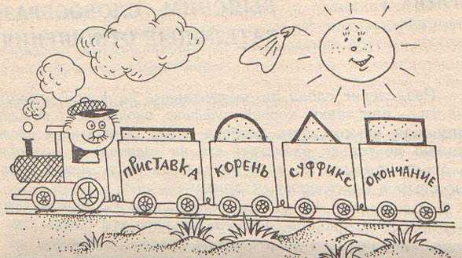
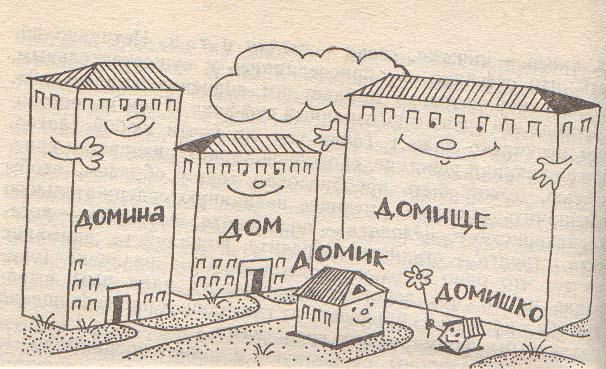

ГРАММАТИЧЕСКИЙ СТРОЙ ЯЗЫКОВ
2. Грамматическая форма и грамматическое значение.
3. Способы выражения грамматического значения.
6. Исторические изменения в морфологическом строе языка.
7. Синтаксис: словосочетание и предложение.
Мысль не может быть передана отдельными словами, эти слова должны быть связаны между собой грамматически.
Грамматика – совокупность средств, способов и правил построения словосочетаний и предложений, а также наука об этих средствах.
Грамматика связана с другими уровнями языка. Например, связь с лексикой проявляется в том, что, лексическое значение слова определяется его грамматической структурой: крепкое слово - верное нерушимое слово, а крепкое словцо - это бранное нехорошее слово. Грамматика связана также с фонетикой. Так, перестановка ударения меняет грамматическое значение слова: д`ома – в Р.п., в единственном числе, дом`а - во множественном числе, в И.п. или в В.п.
Основными разделами грамматики являются:
1. Словообразование (дериватология) и морфемика - занимаются изучением образования новых слов по существующим в языке моделям, структуры производных слов. Словообразование занимает промежуточное положение между лексикой и грамматикой, поэтому некоторые ученые не включают его в состав грамматики.
2. Морфология - изучает законы изменения слов как частей речи, а также категории, присущие той или иной части речи.
3. Синтаксис (от греч. syntaxis - составление) исследует различные типы сочетания слов, отношения между словами в словосочетании и предложении, наконец, предложение, его типы.
В грамматике изучаются четыре единицы языка: морфема, словоформа, словосочетание и предложение. При описании грамматического строя важнейшими являются понятия: грамматическая форма, грамматическое значение, грамматическая категория.
II. ГРАММАТИЧЕСКАЯ ФОРМА И ГРАММАТИЧЕСКОЕ ЗНАЧЕНИЕ
Главной единицей грамматики, как и лексикологии, является слово. Но лексикология изучает лексическое слово - лексему, а грамматика изучает грамматическое слово - форму слова, словоформу, граммему.
Словоформа – это форма грамматического изменения одного и того же слова - лексемы. Это значит, что словоформы имеют разные грамматические, но одно и то же лексическое значение (пою, поешь, поет; кот, кота, коту). Лексемы могут иметь одно и то же грамматическое значение, но всегда разное лексическое значение. Так, слова окно, дерево,
озеро имеют одно грамматическое значение предметности и грамматическое значение среднего рода.Лексические и грамматические значения являются двумя основными типами значений, свойственных языку.
Грамматическое значение (ГЗ) - значение, выступающее как добавочное к лексическому значению слова и выражающее различные отношения (отношение к другим словам в словосочетании или предложении; отношение к лицу, совершающему действие, или другим лицам; отношение сообщаемого факта к действительности и времени; отношение говорящего к сообщаемому и т.д.). Обычно слово имеет несколько грамматических значений. Так, слово страна имеет значения женского рода, именительного падежа, единственного числа.
Важнейшее отличие ГЗ от лексического заключается в том, что в ЛЗ слова, например, “дерево”, заключено не только логическое представление о предмете, но и обобщенный образ этого предмета – понятие, соотносимое с предметом реальной действительности. Иначе с грамматическим значением. То же слово “дерево” как имя существительное имеет категориальное значение предметности в широком смысле, под это значение подходит очень много слов: дом, небо и пр. И для грамматики важно отличать это значение предметности от значения качественности (характерного для имен прилагательных), или значения действия и состояния (характерного для глаголов).
Каждое грамматическое явление всегда имеет две стороны:
1) внутреннюю – ГЗ, то, что выражено;
2) внешнюю – способ выражения, то, чем выражено.
В результате их соединения рождается граммема, грамматическая форма – единство ГЗ и грамматического способа его выражения.
Граммема (грамматическая форма) = ГЗ + способ его выражения
Грамматические формы слова имеют одно ЛЗ, но разные ГЗ и средства их выражения (лес – лесом – в лесу). От данного словоизменения (образования форм одного и того же слова) следует отличать словообразование, когда при помощи аффиксов (суффиксов и префиксов) образуются новые слова, имеющие другое ЛЗ: лес – лесной – лесник.
Совокупность всех форм слова (словоформ) образует парадигму. Если слово обладает полной системой словоформ, то говорят, что слово обладает полной парадигмой. Если слово представлено не всеми формами, то это частичная парадигма. Большинство слов русского языка обладает полной парадигмой, но есть и слова с частичной парадигмой: мечты, победить, пылесосить.
III. СПОСОБЫ ВЫРАЖЕНИЯ ГРАММАТИЧЕСКОГО ЗНАЧЕНИЯ
Способы
– эта материальные средства выражения ГЗ. Все способы выражения ГЗ можно поделить на две группы:По преобладающим способам морфологическая классификация определяет тип языка:
1) языки синтетического строя;
2) языки аналитического строя.
|
Синтетические способы |
Аналитические способы |
|
аффиксация супплетивизм |
служебные слова |
Cинтетические способы выражения ГЗ
К синтетическим способам выражения ГЗ относятся: аффиксация, внутренняя флексия, супплетивизм, ударение и повтор.
1. Аффиксация – образование форм слова при помощи окончаний, приставок, формообразующих суффиксов: стол - стола, писать - написать, идти - шел. Это самый распространенный способ выражения ГЗ в языках.
2. Внутренняя флексия (аблаут, от нем.
Ablaut) – это чередование звуков корня при выражении ГЗ. В разных формах слова могут чередоваться как гласные, так и согласные звуки. Например: беру – набор - брать, носить – ношу, любить – люблю. Примерами могут служить английские слова may [mei] (мочь) - might [mait] (мог), французские слова vif (живой) - vive (живая). В арабском языке внутренняя флексия во многих случаях служит единственным средством различения числа: kitab (книга) - kutub (книги).3. Супплетивизм (от франц.
Suppletif - добавочный) – это образование грамматических форм одного слова при помощи разных корней: человек – люди, хороший - лучше, он – его, идти - шел. В других языках это явление также встречается: good –better – best; sein – bin – war; bon – meilleur, ich - mich, I - me.4. Ударение
помогает различать формы слов (р`еки – рек`и, л`юбите – люб`ите) и части речи (пр`опасть – проп`асть).5. Повтор
(редупликация, от лат. reduplicatio - удвоение) - полное или частичное удвоение основы для передачи следующих значений:- значение интенсивности и многократности действия, высокая степень качества, превосходная степень прилагательного: синий-синий, в англ.
a big-big man. В тюркских языках повторяется первый слог с прибавление губного звука: чувашский сап-сара (желтый-прежелтый). В китайском языке: хао (хороший) - хао-хао (очень хороший, превосходный).- множественное число, например, в яванском языке sedulur (друг) - sedulur-sedulur (друзья), orang (человек) - orang-orang (люди); в китайском языке: жень (человек) - жень-жень (люди).
Повтором образуются новые слова. В индонезийском языке api (огонь) - api-api (спички). В чувашском языке чой (чай) - чой-пой (угощение), когоз (бумага) - когоз-могоз (всякие бумажки). В тагальском языке laki (муж) - lalaki (мужчина); в яванском языке lara (больной) - lelara (болезнь). Сравните русские слова тары-бары, шурум-бурум.
Аналитические способы выражения ГЗ
К аналитическим способам относятся: служебные слова, порядок слов, интонация.
1. Служебные слова могут выражать ГЗ отдельных слов: это предлоги (на стол, фр. кота – du chat), вспомогательные глаголы (буду читать) слова степеней сравнения (более сильный), частицы (знал бы, пусть знает). Частицы также используются в других языках как показатель инфинитива в англ. to, в немецком – zu, во фр. безличные глаголы – с частицей il.
В других языках активно используются, наряду с названными, и специфические средства: артикли и послелоги.
Артикль различает части речи: в англ.
the act (дело) – to act (действовать); в нем. чтение – das Lesen. Они различают категорию определенности/неопределенности: Сравним: "книга студента" – англ. the book (данная книга) of the student. Артикль может указывать на род существительного: в нем. мужской – средний – женский: der – das – die; во фр. мужской – женский: le – la. Может указывать на число, во фр. le chat (кот) – les chets (коты).В языках, где нет префиксов, обычно нет и предлогов, их заменяют послелоги, стоящие сзади слова. Они свойственны алтайским, уральским языкам. Например, в узбекском языке: мактаб учун (для школы) – мактаб оддида (около школы).
2. Порядок слов играет особую роль в языках со слабо развитой аффиксацией, где нет словоизменения (или форм мало) и слово в прямом и косвенном падежах сохраняет одну и ту же форму. Например, в английском языке порядок слов определяет смысл предложения и синтаксическую роль слов:
The man killed a tiger или The tiger killed the man. Принадлежность к части речи также определяется порядком слов: the round hoom (круглый дом) –– the hoom round (домашний круг). Аналогичную роль выполняет порядок слов и во французском языке.В русском языке порядок слов не так значим, но все же иногда он различает смысл: Мать любит дочь и Дочь любит мать.
3. Интонация оформляет разные по цели высказывания предложения: Хорошая погода (повествовательное) и Хорошая погода? (вопросительное).
В грамматической системе языка слова организованы двумя основными способами: по грамматическим категориям и по частям речи.
Грамматические значения даны в противопоставлениях друг другу. Например, в русском языке противопоставлены значения шести падежей, а в немецком языке противопоставлены друг другу значения четырёх падежей. Система падежных противопоставлений образует грамматическую категорию падежа. Система противопоставлений значений временных форм образует грамматическую категорию времени. В английском языке эту систему оппозиций образуют 16 временных форм глагола.
Грамматическая категория (ГК)
– группа однородных грамматических значений, противопоставленных друг другу по форме. ГК это парадигма двух-, трех-, или многокомпонентная: ГК числа проявляется в ГЗ единственного и ГЗ множественного числа (идея - идеи); ГК рода – в ГЗ мужского рода (век), ГЗ женского рода (эра), ГЗ среднего рода (столетие); ГК падежа многокомпонентна.Обобщенный характер грамматической категории проявляется в том, что под категорию единственного числа "подводятся" самые разнообразные слова: существительные хлеб и колесо, прилагательные сильный и разумный, глаголы строю и пишу. Под категорию мужского рода подпадают также разные слова, как разум, радостный, победил. Русское имя существительное имеет грамматические категории числа, рода и падежа, а глагол - вида, времени, наклонения, залога, лица, числа, рода. Как видим, грамматические категории соотносятся с другими группировками слов - частями речи.
В языках мира ГК различаются с трех точек зрения.
1. Во-первых, наличие или отсутствие ГК.
Так, категория рода есть в большинстве индоевропейских языков, но нет ее в английском, армянском и финском, нет в тюркских языках. Во французском языке нет ГК падежа. У татарских существительных есть категория притяжательности: ат (лошадь) –атым (моя лошадь) – аты (его лошадь)
.2. Во-вторых, содержание категории может быть разным в разных языках.
Во многих языках выделяют три рода: женский, мужской и средний. Во французском языке ГК рода представлена только двумя ГЗ. По-разному обстоят дела с падежами. В русском языке их шесть. В арабском языке три падежа, в английском выделяют только два падежа (общий и притяжательный: boy - boy's), а в языках Дагестана до тридцати.
3. В-третьих, способы выражения категория рода в языках своеобразны. Рассмотрим их на примере называния живых существ:
1) с помощью особых окончаний: гость - гостья, англ.
dog - dogs или особых суффиксов: актер - актриса, медведь - медведица;2) с помощью разных слов (гетеронимия): отец - мать, брат - сестра, нем
. Vater - Mutter, франц. pere - mere.3) С помощью особых вспомогательных слов: нем.
ein mannlicher Adler - орел, ein weiblicher Adler -орлица, англ. he goat - козел, she goat - коза.4) С помощью лишь контекстного уточнения: кит, белка, обезьяна, сорока, акула, бегемот (и самцы и самки).
Во французском языке показателем рода является артикль, а в русском языке преобладает окончание.
В приведенных примерах категорию грамматического рода определяет биологический пол существа. Род неодушевленные имен не имеет смысловой характеристики: русское существительное ложка - женского рода, в немецком -
der Loffel – мужского рода; в русском языке часовой - мужского рода, в немецком и французском женского рода - die Wache, la sentinelle.4. Одна и та же грамматическая категория (даже ГЗ) может быть выражена различными способами. Вот как выражено ГЗ совершенного вида в русских глаголах:
|
Сделать (делать) |
- префиксация. |
|
Прыгнуть (прыгать) |
- суффиксация. |
|
Собрать (собирать) |
- внутренняя флексия. |
|
Нас`ыпать (насып`aть) |
- ударение. |
|
Взять (брать) |
- супплетивизм. |
Сравнение ГК языков нам хотелось бы закончить словами Р. О. Якобсона: "Таким образом, основное различие между языками состоит не в том, что может или не может быть выражено, а в том, что должно или не должно сообщаться говорящими. Если русский говорит: "Я написал приятелю", различие между определенностью и неопределенностью (по-английски
the friend или a friend) не выражается, тогда как завершенность письма выражена совершенным видом глагола, а мужской пол приятеля - мужским родом соответствующего существительного. Поскольку в русском языке эти значения являются грамматическими, они не могут быть опущены в процессе общения. В английском же, задав по поводу высказывания "I wrote a friend" вопрос, было ли закончено письмо и адресовалось оно мужчине или женщине, рискуешь получить в ответ маловежливое: "Не ваше дело!".Помимо ГК внутри той или иной части речи можно выделить лексико-грамматические разряды слов, группирующиеся на основе общего семантического признака и имеющие грамматические показатели: аффиксы, особенности грамматической сочетаемости. Например, особые ЛГР составляют собирательные имена существительные: они обычно не изменяются по числам, не сочетаются с количественными числительными: листва, студенчество, аппаратура. Другие ЛГР имени существительного: собственные или нарицательные, конкретные или отвлечённые, вещественные; имена прилагательные качественные и относительные.
Морфема
– мельчайшая значимая единица языка. Варианты морфемы в языке называются алломорфы. В речи морфема реализуется в конкретных морфах.
|
Языковые единицы |
Речевые единицы |
|
|
морфема |
Алломорфы |
морфы |
|
-рук- |
-рук- |
-рук- в словоформе [рук-a]-рук'- в словоформе [рук'-u] -руч- в словоформе [руч-н-oj] |
Морфемы различаются по трем признакам 1) по функции в слове, 2) по характеру выражаемого значения и 3) по месту в слове относительно корня.
1. По функции аффиксы бывают:
2. Морфемы могут выражать три типа значений:
Вещественное значение – это выражение понятия (вещи). Его имеет корень: учить.
Деривационное
(словообразовательное) значение – оно дополняет вещественное значение корня (учить – учитель) и выражается словообразующими приставками и суффиксами.Реляционное (относительное) значение – выражает отношение слова к другим словам. Это словоизменительное, формообразовательное значение. Его имеют флексии и аффиксы, служащие для изменения формы слова: учитель - учителя, учить - научить.
По характеру выражаемого значения морфемы делят на корни и аффиксы, внутри которых особо стоят флексии (окончания). Следует заметить, что окончание не всегда стоит на конце слова: учимся, нем. детки –
kind-er-chen.Часть слова без окончания называют основой. Она выражает ЛЗ и состоит из корня, приставок и суффиксов.
Слова, имеющие один корень, называются однокоренными, они составляют гнездо слов. По количеству корней слова делятся на простые и сложные. Например: англ. воскресенье –
sanday, фр. внук – le petit-fils, нем. дедушка – grossvater.Лексическое значение слова складывается из вещественного значения корня и деривационного (словообразовательного) значения аффикса, например: стол + ик = маленький стол. Грамматическое значение этого слова складывается из деривационного значения суффикса и реляционного (формообразовательного) значения нулевого окончания (единственное число, И.п).
3. Типы аффиксов по их положению относительно корня
|
Тип аффикса |
Место в слове |
Примеры |
|
префикс |
перед корнем |
при-лететь , нем. auf-stehen |
|
постфикс |
после корня |
хорош-о; англ. cold-ness (холод); нем. Arbeit-er (рабочий). В тюркских языках есть только постфиксы: татарское тоз-лы (соленый). |
|
инфикс |
в середине корня |
тагальск. sulat (письмо) - s-um-ulat (писать); латынь – vic-i (победил) – vi-n-c-o (побеждаю); fid-i (расколол) - fi-n-d-o (раскалываю). |
|
конфикс (циркумфикс) |
вокруг корня (префикс + постфикс) |
нем. ge-mach-t (сделанный), sagen (сказать) - ge-sag-t (сказанный) |
|
трансфикс |
"разрывающий" корень - в "пазы" обычно трёхсогласного семитского корня вставляется двух- или трёхгласный трансфикс |
Арабск. kataba (он написал), kutiba (написан), kaatibun (пишущий), kitaabun (письмо) |
|
интерфикс |
между корнями |
сам-о-лет , нем. Land-s-mann (земляк), Klasse-n-heft (классная тетрадь) |
4. По материальной выраженности аффиксы могут быть выраженными (звуками и буквами) и нулевыми
: писал, стен, book.Аффиксы, как и корни, могут быть синонимичными (горьковец – горьковчанин) и омонимичными (банька – студентка).

Дериватология (словообразование)
Дериватология (словообразование) - раздел грамматики, изучающий способы образования слов в языке. Новые слова могут возникать в языке (помимо семантического пути и заимствования) грамматическим путем. Тремя главными способами являются:
Разные способы могут использоваться одновременно: мореплаватель.

ЧАСТИ РЕЧИ
С грамматической точки зрения все слова делятся на большие группы – части речи Части речи – это наиболее общие классы слов, их лексико-грамматические разряды, которые отличаются друг от друга четырьмя признаками:
1) обобщенным грамматическим значением;
2) морфологическими особенностями;
3) словообразовательными особенностями;
4) синтаксическими функциями.
Состав частей речи и их признаки различны в языках. Например, в тюркских нет предлогов, но есть послелоги. В немецком, английском, и французском языках есть артикли, отсутствующие в русском языке.
VI. ИСТОРИЧЕСКИЕ ИЗМЕНЕНИЯ В МОРФОЛОГИЧЕСКОМ СТРОЕ ЯЗЫКА
Исторические изменения языковой системы в наибольшем степени касаются лексикона как её самого мобильного компонента. Но они могут затрагивать и другие уровни языка: фонологический, морфологический и синтаксический. Изменения в морфологическом строе языка (включая и систему формообразования, и систему словообразования) могут быть следующих видов:
Инвентарь морфологических категорий может возрастать. Так, в германских и романских языках сформировалась грамматическая категория определённости - неопределённости.
Инвентарь грамматических категорий может уменьшаться. Так, в английском языке отмерла категория рода существительных. Произошло это так. Древнеанглийский язык (VII - XI вв.) был языком синтетического строя с развитой системой флексий. Существительные здесь распадались на три рода с многочисленными типами склонений и изменялись по четырем падежам. В среднеанглийский период (XII - XV вв.) конечные безударные гласные редуцируются (сокращаются, исчезают), существительные утрачивают род, и все разнообразие именного склонения сводится к нескольким основным типам. В то же время возрастает роль порядка слов и предлогов. В новоанглийский период (с XVI в. по настоящее время) все эти черты аналитизма усиливаются и развиваются. Сегодня категория рода сохранилась здесь лишь у личного местоимения:
he - she - it. По отношению же к английскому существительному иногда говорят, что оно обладает скрытой категорией рода, поскольку она обнаруживается лишь при замене имени личным местоимением. Французский язык (как и многие романские) утратил категорию падежа.Перестройка внутренней структуры грамматической категории имеет место, во-первых, в тех случаях, когда число противопоставляемых в ней ГЗ уменьшается: сокращение числа родов во французском языке с трёх до двух за счёт исчезновения среднего рода; сокращение числа родов в шведском с трёх до двух в связи со слиянием мужского и женского родов, сокращение ГК числа с трёх до двух в индоевропейских языках в связи с утратой ГЗ двойственного числа.
Например, в древнерусском языке (XI - XIV вв.) категория числа имела три составляющие ее граммемы: единственное, множественное и двойственное число. Двойственное число было важным для существительных, которые обозначали парные предметы: уши, плечи, рога. Такое существительное чаще употреблялось в двойственном числе (2 глаза), чем по множественном (глазы). С XV в., когда двойственное число отмирает, его форма вытесняет форму множественного числа. Но процесс продолжается: под влиянием этих форм начинает образовываться множественное число других существительных: дома, леса, снега (вместо домы, лесы, снеги). Сегодня форма на -А продолжает свое наступление, порождая даже ошибки типа "шофера", "токаря".
Во-вторых, в тех случаях, когда в рамках уже существующей категории возникают новые ГЗ: появление формы будущего времени во многих индоевропейских языках, формирование сложной системы времён в английском языке, где в рамках одной категории друг другу противостоят 16 граммем.
Изменения в морфологическом типе языка могут быть связаны, с одной стороны, с нарастанием тенденции к аналитизму, к замене синтетических форм аналитическими (например, во французском и английском языках) и, с другой стороны, с нередкой обратной тенденцией к преобразованию аналитических форм слова в синтетические (при переходе служебных слов в аффиксы; ср. фр.
j'aimerai и лат. amare habeo).Перестройка морфологической структуры слова может происходить в виде следующих процессов:
Опрощение – сокращение числа морфем, вызванное слиянием аффикса с корнем или двух корней: кол
-ес-о (др.-русск. коло) > колес-о. Русские слова, начинающиеся на ОБ-, чаще всего имеют такую приставку. Однако во многих словах сегодня она не выделяется, хотя мы и чувствуем значение древнего корня: обман (манит), обморок (морочить, мрак), обруч (рука). Опрощение часто сопровождалось звуковыми изменениями: оборот (воротить, вращать), обет (завет, вещать). Опрощение произошло и в словах пир, жир, дар. Когда-то в них выделялся суффикс -р, следовавший за теми же корнями, что в словах пить, жить, дать.В английском языке
lord < др.-англ. hlafweord (хранитель хлеба), англ. lady < др.-англ. hlafdige (замешивающая хлеб), англ. women состояло из двух корней: wif (жена) и man (человек).Опрощение состава слова часто происходит при заимствовании. В пришедших из английского языка словах бутсы, джинсы, кекс, кокс мы не выделяем имевшийся там суффикс множественного числа -S.
Переразложение – перераспределение морфем внутри слова: мы-ло (от мыти
) > мыл-о; рука-ми (-а входило в основу в качестве тематического гласного) > рук-ами (-а вошло в состав окончания).Интересный пример переразложения мы наблюдаем при склонении местоимений 3-го лица. Современные предлоги выглядели в древности иначе: c - cън, в - вън, к - кън. Постепенно конечный звук -Н присоединился к местоимению: "вън его" - в него, "сън имъ" - с ним, "кън ему" - к нему.
Усложнение (осложнение) – выделение морфемы, которой не было ранее: зонтик (от голл. zondek) > зонт-ик; исп. hamaca, фр. hamac, русск. гамак, но нидерл. сложное слово hangmat (подвесной коврик, мат).
Слова в речи не существуют обособленно, они живут в связях и образуют единства, называемые словосочетаниями, предложениями и текстами. Изучаются эти единицы языка в разделе лингвистики, который называется синтаксис.
Синтаксис (от греч. syntaxis – составление) – это раздел науки о языке, изучающий строй связной речи, синтаксические единицы языка – словосочетание, предложение и текст.
Каждая из них может характеризоваться в трёх аспектах:
- формально-структурном (строевом),
- семантическом и
- прагматическом.
Синтаксические единицы могут изучаться как с позиций формального подхода, т.е. в направлении от формы к её значению, так и с позиций функционального, содержательного, подхода, т.е. от значения к выражающим его средствам. Первый подход лежит в основе "пассивной" грамматики, а второй - в основе "активной" грамматики (термины Л.В. Щербы). Формальный подход воспроизводит путь читателя, а вместе с тем путь лингвиста-аналитика. Функциональный подход, по сути дела, моделирует путь говорящего.
Текст - графически зафиксированное развёрнутое высказывание, выступающее в виде связной последовательности предложений. Это наиболее сложная и наименее исследованная единица синтаксиса.
Словосочетание
Словосочетание – это сочетание двух или нескольких самостоятельных слов, связанных по смыслу и грамматически.
Это самое простое определение словосочетания. Оно не отражает всех особенностей данной единицы языка, связанных с ее значением, формой и функциями.
Значение словосочетания складывается из ЛЗ и ГЗ составляющих его слов. Одно слово является главным, другое зависимым. Когда слова соединяются в словосочетание, между их ЛЗ рождается смысловая связь. Именно поэтому мы можем сказать горячий чай, но не говорим горячий лед.
Авторы художественных текстов могут намеренное нарушать смысловую связь слов в словосочетании, что приводит к рождению оксюморона:
Cмотри, ей весело грустить,
Такой нарядно обнаженной.
(А.Ахматова)
Оксюморон (греч. oxymoron – остроумно-глупое) – стилистическая фигура, состоящая в соединении двух понятий, противоречащих друг другу. Например: звонкая тишина, красноречивое молчание, сладкая скорбь.
С точки зрения ЛЗ, словосочетания неповторимы. Но с точки зрения ГЗ, их можно объединить в группы, создать модели. ГЗ словосочетания складывается из ГЗ составляющих его слов. Так словосочетания вступительный экзамен, хорошая отметка, студенческий билет имеют общее ГЗ – предмет и его признак. Оно складывается из ГЗ предмета, которое есть у главного слова – существительного; и ГЗ признака, имеющегося у зависимого слова – имени прилагательного.
Форма словосочетания. Грамматическая связь слов в словосочетании осуществляется с помощью окончания зависимого слова или окончания и предлога, например: давняя мечта, стоял на пороге. В некоторых словосочетаниях слова соединяются только по смыслу, а грамматическая связь отсутствует, так как зависимое слово не может подстроиться под главное – оно не изменяется, например: стоял прямо.
Словосочетания можно классифицировать с различных точек зрения.
1. По степени слияния компонентов словосочетания могут быть: свободными, в которых компоненты соединяются свободно (весна + дружная, пришла, надежды), и несвободные.
Несвободные словосочетания делятся на:
а) фразеологизмы – устойчивые словосочетания, в которых слова утрачивают свою самостоятельность, но приобретают одно ЛЗ, становятся одной частью речи и одним членом предложения, например, бежать во все лопатки. Их изучает фразеология.
б) синтаксически несвободные (неделимые, цельные). В них лексическая самостоятельность слов не утрачена, но ослаблена, поэтому они являются одним членом предложения. Например: Двое друзей сразу начали готовиться к экзаменам. Кто-то из родственников, наверное, дед с бабушкой, так решили меня назвать.
2. По способу выражения главного слова словосочетания делятся на:
а) именные – главное слово имя или местоимение: письмо брату, второй справа, что-нибудь интересное;
б) глагольные – главное слово глагол, причастие, деепричастие: думать о будущем, брошенный хозяином, улыбаясь радостно;
в) наречные – главное слово наречие: совершенно секретно, мне грустно.
3. По способам соединения слов.
Слова (а также предложений) могут соединяться двумя типами: сочинением с равноправными компонентами (день и ночь; красивый, но дорогой) и подчинением, при котором один элемент главный, а второй – зависимый (красное яблоко, рубить дрова, желание любить). Большинство лингвистов допускают в словосочетании только подчинительную связь. Она может быть трех видов.
а) Согласование – связь, при которой зависимое слово ставится в той же форме, что и главное. Обычно согласуются с существительным в роде, числе и падеже имена прилагательные, причастия, порядковые числительные и некоторые местоимения. Например: к большому открытому окну. Возможно неполное согласование, только в числе и падеже: город Вологда.
б) Управление – подчинительная связь, при которой главное слово (глагол, имя, местоимение, наречие) требует постановки зависимого (существительного, местоимения) в определенном падеже. Например: верен (чему?) слову, недалеко (от кого?) от меня.
в) Примыкание – подчинительная связь, при которой зависимое неизменяемое слово (наречие, инфинитив, деепричастие) связывается с главным только по смыслу. Например: ехать верхом, цвет маренго.
Примыкание широко распространено в языках мира, особенно в тех, где нет аффиксов (изолирующих языках) или у прилагательного нет рода, числа, падежа: англ. the green tree (зеленое дерево), came late (пришел поздно); в татарском кызык алма (красное яблоко) и кызыл алмалар (красные яблоки) и кызыл йорт (красный дом).
4. По характеру отношений между компонентами различают словосочетания:
а) атрибутивные - веселый человек;
б) объектные - учит урок;
в) релятивные - громко кричит.
Словосочетание как единица языка занимает место, промежуточное между словом и предложением. По своей функции оно ближе к слову. Основная функция словосочетания – номинативная, назывная. Словосочетание, как и слово, называет явление действительности, но более точно, конкретизировано. Сравним: книги и новые книги, пять книг.
Словосочетания вместе со словами являются «строительным материалом» для предложения, т.е. выполняет строительную функцию. Подлежащее и сказуемое не являются словосочетанием, так как их связь создает уже предложение, выполняющее коммуникативную функцию.
Предложение
Предложение отличается от слова и от словосочетания, и отличие это не количественное. Предложение может состоять из одного слова и быть формально похожим на словосочетание. (Светает. Ранее утро). Различие между этими единицами языка качественное. Предложение обладает признаками, присущими только ему.
Признаки предложения:
1. Главный признак предложения – коммуникативность. Это установка автора в процессе общения. Предложение выполняет коммуникативную функцию: в нем сообщается о чем-либо, содержится вопрос или выражается побуждение к действию.
2. Предложение не только выражает мысль, но и часто передается отношение к этой мысли самого говорящего. Т.е. в предложении сочетается информация объективная (ее называют диктум) и субъективная (модус). Этот признак предложения называется модальностью.
Модальность передает отношение человека к содержанию высказывания и к самой действительности. Автор может утверждать, требовать, спрашивать и т.д. Отсюда классификация предложений по цели высказывания и по эмоциональности.
В разных языках модальность выражается по-разному. Например, в предложении «Хорошо, что пошел снежок» модальность выражается оценочным словом «хорошо» и грамматическим средством – суффиксом в слове «снежок». В одном предложении могут совмещаться несколько модальных значений: Как вам не стыдно?!
3. Особый признак предложения - предикативность, то есть отношение сообщения к действительности. Предикативность как категория предложения связана с приписыванием признака какому-либо предмету, с его характеристикой (Мама спит). Она передается соединением сказуемого с подлежащим.
Чаще всего предикативность выражается наклонением глагола: если, например, глагол-сказуемое употреблен в повелительном наклонении, то речь идет не о реальном действии, а о действии, к которому побуждают («Храни меня, мой талисман»).
4. Для выражения синтаксических связей и разнообразных функций (соединение слов в речи, оформление предложений и различение их коммуникативных типов и пр.), используются специальные синтаксические средства.
Наиболее универсальным средством является интонация. Именно наличие интонации отличает предложение от словосочетания. Фразовая интонация может выделять предложения в тексте, выделять наиболее важные в смысловом плане звенья предложения, разграничивать тему и рему высказывания. Интонационные средства могут способствовать различению вопросительных и повествовательных, восклицательных и невосклицательных предложений, сигнализировать о наличии перечислительных конструкций и т.д.
Другим наиболее универсальным синтаксическим средством является порядок слов. В исследованиях языков за основу берут взаимное расположение подлежащего (S), глагола (V) и дополнения (O).
Порядок слов в предложении может быть свободным и фиксированным. Одни языки характеризует тенденция к свободному порядку слов. Таковы, например, русский и латинский языки, обладающие богатыми возможностями расположения членов предложения, сравните: Студенты сдают экзамен. - Студенты экзамен сдают. Другие языки тяготеют к фиксированному порядку слов. Так, в испанском языке из 6 возможных вариантов порядка слов реализуются 4, а во французском только два. Порядок слов немецкого предложения более строг, чем в русском языке. В английском предложении он строже, чем в немецком, но свободнее, чем во французском.
Если мы говорим, что в языке свободный порядок слов, то это не означает, что слова в нем могут стоять как попало, а всего лишь то, что изменение порядка слов в этом языке к изменению смысла. А вот в языках, подобных английскому, раз и навсегда заданный порядок слов — потому-то он и называется «жестким». Но даже в языках с жестким порядком слов возможны варианты. Посмотрим, как будет выглядеть одно и то же предложение в разных языках.
Русский: Лиза дала дракону яблоко.
Английский: Lisa gave an apple to the dragon .(Лиза дала яблоко дракону).
Французский: Lize donna ипе ротте аи dragon .(Лиза дала яблоко дракону).
Немецкое предложение очень похоже на английское и французское:
Lisa gab dem Drachen einen Apfel. (Лиза дала дракону яблоко).
Порядок слов совпадает. Но заменим теперь существительные на местоимения — «Она дала ему его». Вот что получится:
Английский: She gave it to him (Она дала его ему).
Французский: Elle Ie lui donna (Она его ему дала).
На этот раз во французском языке глагол оказался на конце (совсем как в турецком или в лезгинском языках). Но это всё равно жесткий порядок слов - ведь мы не можем переставить слова иначе. Похожие перестановки слов бывают и в немецком языке - тоже языке с «жестким» порядком (несмотря на то, что в немецком есть падежи и он мог бы позволить себе большую свободу...). В обычном предложении немецкий язык строго предписывает придерживаться порядка «глагол в середине». Но как только мы захотим создать предложение посложнее (например: Надя знает, что Лиза дала дракону яблоко), так сразу же нам понадобится переставить глагол «дать» в конец предложения. Выглядеть это будет так:
Nadja weiss, dass Lisa dem Drachen einen Apfel gab.
Значит, немецкий глагол всё-таки может перемещаться в конец предложения при особых обстоятельствах. Более того, может он перемещаться и в начало. Если мы скажем вот так:
Gab Lisa dem Drachen einen Apfel? - то у нас получится вопросительное предложение.
Так жесткий ли порядок слов в немецком языке? Да, хотя чуть менее жесткий, чем в английском.
В большинстве случаев в предложении одновременно используется несколько формальных синтаксических средств: интонация + порядок слов.
5. Функциональное изучение предложения позволяет увидеть, как в речи модель предложения реализуется в высказывании и происходит актуализация отдельных слов.
Актуальное членение предложения – это смысловое выделение, подчеркивание одного из компонентов предложения. Этот компонент, содержащий новую, главную информацию, называют ремой, остальная часть предложения, уже известное – тема.
Средствами актуального членения являются: постановка фразового (логического) ударения, паузы и порядок слов, некоторые частицы: Она даже этого не знала.
Дополнительный материал можно почерпнуть в Словаре-справочнике.